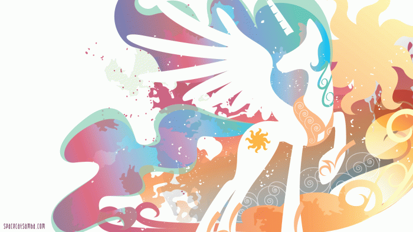

Дизайн Селестії був натхненний Маджесті, єдинорогом із першого покоління.  Ім'я Селестії походить від англійського слова "сelestial" (небесний, божественний, чудовий), яке, у свою чергу, успадковане від латинського "caelum", що означає небо чи рай. Лорен Фауст повідомляла про те, що «принцеса Селестія» спочатку називалася «королевою Селестією», але пізніше, на прохання Hasbro, її статус змінили на «принцеса».
Селестія більше за інших поні, за винятком Місячної поні, яка приблизно такого ж зростання, поки вона знову не перетворюється на принцесу Місяць. Як і в єдинорігів, магічна аура оточує ріг Селестії та об'єкт, на який застосовується магія. Однак колір її аури завжди різний. Наприклад, у серії «Птах Фенікс» у неї синій колір аури, помаранчевий в «Історія відзнак». У серії «Повернення Гармонії. Частина 1» вона відкриває двері синьою аурою, але після, коли тримає порожню скриньку з елементами гармонії, він змінюється на фіолетовий. Зрештою, починаючи з нової, переробленої початкової заставки другого сезону, колір аури остаточно стає жовтим. Її хвіст і грива майорять навіть тоді, коли сама Селестія не рухається, але перестають це робити, коли вона поранена чи слабка.
Слово «Луна» з іспанської та італійської перекладається як «Луна» (обидві мови походять від латинської). У «Friendship is Magic storybook» друзі називають Місяць Селеною. «Селена» (грец. Σελήνη) також перекладається як «Місяць». Відомо також, що "Луна" - латинське ім'я грецької богині Місяця, згідно міфології, дочки Гіперіона і Тейї. У російському перекладі залишили ім'я "Луна", ймовірно, у зв'язку з співзвучністю з російським словом "Луна".
Після того, як головні героїні кинули Місячну поні у серії «Магія дружби. Частина 2», Місяць із великої чорної кобилиці з ефірною шевелюрою перетворився на невелику кобилку із звичайним, волошкового кольору волоссям. За словами Лорен Фауст, під дією Елементів гармонії Місяць переродився і втратив більшу частину своєї магічної сили. У наступних епізодах тіло Місяця більше і темніше, грива стала вільно майоріти в повітрі, набула напівпрозорості та мерехтливого відтінку. Така зміна Лорен пояснює тим, що Місяць поступово відновлює втрачений магічний потенціал, знову звертаючись до добра та гармонії.
У створенні Каденс брала участь Лорен Фауст, але за неї вона замислювалася як єдиноріг. Згодом, Каденс переробили в алікорну, чому Фауст сильно здивувалася, оскільки за її задумом в Еквестрії мають бути лише дві принцеси: Селестія і Місяць, але вплинути на рішення вона вже не змогла у зв'язку зі своїм виходом із проекту. Своїм ім'ям Каденс зобов'язана терміну "каденція", що в музиці означає або гармонійний оборот, що завершує музичну побудову, або віртуозне соло у вокальній або інструментальній музиці.
Цікавим моментом є плутанина, що виникла спочатку, з написанням її імені. Так, на початку третього сезону зустрічалося написання "Cadence". Воно ж потрапило на деякі рекламні та промо матеріали. А в New York Times її поспішно назвали "Princess Mi Amore Cadenza". На відміну від Селестії та Місяця, у Каденс прості грива та хвіст. Каденс – правителька Імперії, але при цьому носити титул принцеси, а не імператриці. У книжці Twilight Sparkle і Crystal Heart Spell Каденс стверджує, що вона народилася пегасом і лише пізніше стала алікорном.
Раніше вона жила в Кантерлоті, де навчалася під опікою принцеси, але потім переїхала в Понівілль, де зараз працює як бібліотекарка і стала вчителем школи дружби. Іскорка регулярно підтримує листування з її наставницею. До кінця четвертого сезону жила у міській бібліотеці разом із юним драконом Спайком та філіном Совою. На жаль, в останній серії четвертого сезону бібліотеку було повністю знищено Лордом Тиреком, але пізніше на її місці з'явився Замок Райдужного Королівства, в якому тепер вона й проживає
Сутінкова Іскорка є елементом магії. Після серії «Загадкові чарівні ліки» перетворилася на алікорну і була нагороджена званням принцеси, ставши таким чином четвертим алікорном з уже відомих Принцеси Селестії, Принцеси Місяця та Принцеси Каденс. У початковому дизайні Іскорки Лорен Фауст використовувала колірну схему та відзнаку від поні першого покоління на ім'я Twilight (Сутінкова), яка з'являлася в пілотному випуску Rescue at Midnight Castle. Згодом, колірна схема Сутінкової Іскорки була замінена на аналогічну у земної поні третього покоління на ім'я Twilight Twinkle (Сутінкове Мерехтіння) з трохи зміненими гривою та хвостом. Twilight з першого покоління могла телепортуватися за своїм бажанням, а Twilight Twinkle любила дивитись на світлячків; У Іскорки є обидві особливості цих поні, з її можливістю до телепортації та періодичним спостереженням за зірками, хоча вона набагато більш занурена в навчання і має більш потужні магічні здібності. Вона також поділяє декілька персональних рис з Wind Whistler (Свистячий Вітер), такі як схильність більше покладатися на логіку, ніж на інстинкти та звичку використовувати складні та технічні терміни.